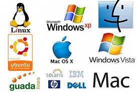
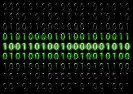
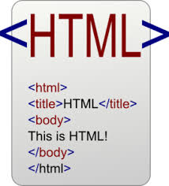

INFORMATICA |
DEFINICIONES
Sistemas Operativos
Un sistema operativo es un software que actúa como intermediario entre el usuario y el hardware de la computadora. Gestiona los recursos del computador, como la memoria, el procesador y los dispositivos periféricos. Permite ejecutar aplicaciones y controlar todos los procesos del sistema. Ejemplos populares son Windows, macOS y Linux.

Sistema Binario
El sistema binario es un sistema numérico que utiliza solo dos dígitos: 0 y 1. Es la base fundamental de toda la computación digital, ya que los computadores trabajan con electricidad que puede estar encendida (1) o apagada (0). Cualquier información, imagen, sonido o texto se almacena y procesa en forma de secuencias binarias.

HTML (HyperText Markup Language)
HTML es el lenguaje de marcado estándar utilizado para crear páginas web. Utiliza etiquetas (tags) para estructurar el contenido de una página, como títulos, párrafos, enlaces e imágenes. HTML proporciona la estructura básica de un sitio web, mientras que CSS se encarga del diseño y JavaScript de la interactividad.

Diagramas de Flujo
Un diagrama de flujo es una representación gráfica de un proceso o algoritmo. Utiliza símbolos estandarizados como óvalos para inicio/fin, rectángulos para procesos, rombos para decisiones y flechas para indicar el flujo. Los diagramas de flujo son herramientas esenciales para planificar, documentar y comunicar procesos de manera visual y fácil de entender.